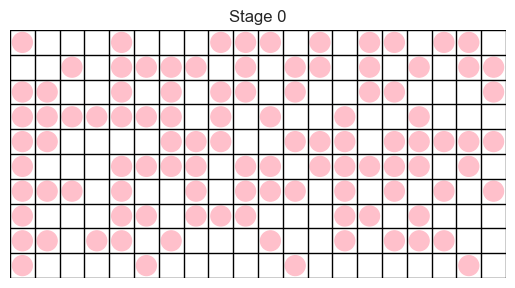

Covered in class.
The following is an implementation of the Game of Life using the Mesa Agent Based Modeling library. This library has a few versions of the Game Of Life, the implementation here is slower but simpler to help you understand how to use the mesa library.
Agent / Cell and ModelTo implement an agent based model in mesa we need to create at least two classes:
The Agent represents the individuals or entities in the model — a tree in the Fire model, a cell in the Game of Life, a person in a SIR model, etc.
state that represents its current condition, and a set of rules that determine how the agent's state changes over time.pos attribute that represents the agent's location in the model space and unlike cellular automata, the agent can move.The Model class represents the overall model and is responsible for creating the agents, storing the model parameters, and updating the agents over time.
Agent / Cell classThe Agent / Cell class should
state which is DEAD or ALIVE.is_alive to return True iff state is ALIVE.get_neighbors to return a list of all neighbours.compute_step to compute the update, to state, needed in the next step.step to apply the update (that was computed in compute_step).So to start, the code for Cell will look like
1 2 3 4 5 6 7 8 9 10 11 12 | |
Then as we add the required functionality, we will update this class. First we add the state and ALIVE and DEAD constants.
stateA Cell has a state that is either DEAD or ALIVE. And since we want to perform a simultaneous update of all agents, we need a second variable _next_state to store the state that the agent will change to in the next step.
1 2 3 4 5 6 7 8 9 | |
is_alive functionThe is_alive function just returns True iff the state is ALIVE.
1 2 | |
get_neighbors functionThe get_neighbors function returns a list of all neighbours of the agent. If the Model has a spatial grid, then each agent has a pos attribute that represents the agent's location in the model space.
Each agent can
assess the model using self.model,
access the model grid using self.model.grid,
and from there use grid method get_neighbors function to get the neighbours of the agent.
For the Game of Life, we use the Moore neighbourhood (so moore=True), and we do not treat the agent as being a neighbour of itself (so include_center=False). Hence we have 8 neighbours and use the following code:
1 2 | |
compute_step function and step functionThe compute_step function computes the value of _next_state, typically based on the agent's state and the state of its neighbours.
1 2 3 4 5 6 7 | |
The step function applies the update computed in compute_step to the state.
1 2 | |
Model classThe Model class stores the model parameters,
the model geometry (space/grid),
and the agents in the model.
The basic structure of this class is
1 2 3 4 5 6 7 8 9 10 11 12 | |
Model.__init__ create a grid to store the cells/agentsTo create the grid, we want a rectangular grid with wrap around geometry, and at each position of the grid we want a single cell (so use mesa.space.SingleGrid):
width and height to the model constructor (Model.__init__).1 | |
Model.__init__ create the required grid1 2 | |
Model.__init__ create the agents/cells at each position in the gridIn the constructor, Model.__init__ we:
Cell and set state to ALIVE with probability density.First add extra parameter to Mode.__init__
1 | |
Then have loop to iterate over grid locations and for each location, create a cell, set its state, and place in grid.
1 2 3 4 5 6 7 8 | |
We need a function, draw_model with structure
1 2 3 4 5 6 7 8 9 10 11 | |
To setup the axis we want to set the plot limits to match the model grid size, and hide the axis tick marks. So we have
1 2 3 4 5 6 7 | |
We could use the matplotlib grid function to draw the grid, but I decided instead in drawing the (horizontal and vertical) lines using a for loop.
1 2 3 4 5 | |
We next draw the agents, I used a small circle and the colour is set based on the cell state.
1 2 3 4 5 6 7 | |
Note: in the above I draw the DEAD cells as white and the ALIVE cells as green, so the DEAD cells are not visible. While checking your code, you may want to draw the DEAD cells as black so that you can see them.
Finally we add a title to the plot. Here we could display the number of steps taken (i.e. the stage) but we could display other information such as the population size, the number of changes etc.
1 2 | |
Output of the draw_model function is shown below.

We will animate our models using the same process that we used for the numpy implementation.
frame that generates each frame. Typically it updates the model (calling model.step()) and displays the model (by calling show(model, ax)).matplotlib window using (or similar if multiple plots), by calling plt.subplots we pass the resulting ax to draw_model, which will draw the model.animation.FuncAnimation and HTML(anim.to_jshtml()).1 2 3 4 5 6 7 8 9 10 11 12 | |
TODO